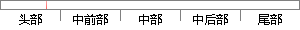

HTML得到快速的发展之后。
片段位置图

相似结果|
相似片段 1：草案的形式发布，从2．0版，到3．2版和4．0版，再到1999年的4．0l版。随着HTML的发展，W3C掌握了对HTML规范的控制权。然而在快速发布了这四个版本之后，业界普遍认为HTML已经走到了尽头
相似片段 2：更好的展现效果。之后Flash插件的出世使得HTML中音频，视频的等多媒体应用得到进一步的发展。(2)J1&务端技术服务端的技术也是从静态走向动态的过程，在技术的不断进步中逐步完善起来。最早的Web
相似片段 3：1992年，HTMLl．0发布，表明HTML正式作为SGML的一个小标签集应用于Web中。随着Web应用的爆发式增长，作为网页的显示语言，HTML也得到了快速发展，不同时期的HTML标准不断增加了新
相似片段 4： 41998 CSS 22000 XHTML 12002 使用DIV+CSS进行网页布局2005 AJAX然而，在快速发布了这四个版本之后，业界普遍认为HTML已经到了穷途末路，对Web标准的焦点也开始转移
相似片段 5：VRML视为HTML的延伸，以免限制了VKML未来的发展。一32—尽管VRMLl0规格有些缺陷，但是它为立体空问的数据呈现建立了?个JI端。在I．O版规格之后，陆续有些修订的版本出现。而在VRML2．0
相似片段 6：，HTML飞速发展，一年内推出 HTML3.2和 HTML4.0，直到 1999年的 HTML4.01，HTML到达了第一个拐点。在快速发布了这四个版本之后，业界普遍认为 HTML已经到了穷途末路，对Web
相似片段 7：IETF的角色，成为HTML的标准组织者。之后，HTML飞速发展，．一年内推出HTML3．2和HTML4．0，直到1999年的HTML4．01，HTML到达了第一个拐点。在快速发布了这四个版本之后
相似片段 8：现在，HTML语言在原来的基础上又增加了很多扩展的功能，由此说明HTML进入了快速发展和普遍认可使用阶段。因此，在学习网页制作的过程需要不断地更新HTML语言及其技术的标准，以适应不断发展和变化
相似片段 9：的设计，这使得基于网络的系统开发变得快速和简单。12服务端在接受到动态网页的访问申请时，开始运行 JSP 里面的程序段，之后返回运行的结果以及嵌入的 HTML代码给客户端。在 JSP技术中，通过
|
※ 片段修改建议 ※
近似词参考：- 得到：获得
- 发展：成长 生长
- 之后：以后
系统自动生成语句：HTML获得快速的成长以后。
注：本片段修改建议为系统自动生成，仅供参考。